Практичні курси · журнал «ДентАрт» 2014 №2 (75)
Методики відновлення жувальної поверхні залежно від ступеня зруйнованості
TECHNIQUES OF RESTORATION OF A CHEWING SURFACE FOR DIFFERENT EXTENTS OF DESTRUCTION
Головною метою реставраційного лікування бокових зубів є передусім функціональна реабілітація. Функціональність у свою чергу зумовлена анатомічною точністю виконуваної конструкції. Опукла і рельєфна жувальна поверхня утворює множинні точкові контакти з зубами-антагоністами, рівномірно розподіляючи оклюзійне навантаження. Контактні точки повинні бути невеликими за площею для забезпечення швидкого розмикання зубів при рухах нижньої щелепи. Широкі і плоскі поверхні, що змикаються, з більшою ймовірністю залишаться в контакті при рухах нижньої щелепи. При цьому виникає тертя, що призводить до більш вираженого зношування зубів і реставрацій та зниження жувальної ефективності.
Навряд чи хтось стане заперечувати необхідність точного відтворення жувальної морфології при проведенні реставрації. Проте досягнення цієї мети для більшості стоматологів пов'язане зі значними труднощами. Однією з найпоширеніших проблем є те, що лікареві після копіткого і тривалого моделювання жувальної поверхні доводиться нещадно спилювати всі горбики і фісури на етапі інтеграції зуба в оклюзію. У результаті вся краса, яку відтворює фахівець, перетворюється на безформний, неестетичний і малофункціональний «коржик». У стоматологічній літературі описано велику кількість різних методик, що дозволяють уникнути подібних складнощів (метод циркуля, орієнтування на зуби, що стоять поруч, оклюзійний компас, всілякі схематизації, спрощені алгоритми побудови і т. д.), проте всі ці рішення дають лише приблизні результати. Ті підходи, які будуть розглянуті в цій статті, значно полегшують роботу лікарів і дозволяють виготовляти високоточні реставрації. Головною ідеєю, покладеною в основу цих підходів, є те, що залежно від ступеня зруйнованості зуба використовуються різні методологічні варіації відновлення. Слід, однак, зазначити, що ці методики орієнтовані на роботу з вітальними зубами, тобто в умовах, сприятливих для формування міцного адгезивного з'єднання.
За ступенем зруйнованості можна виділити три умовних рівні:
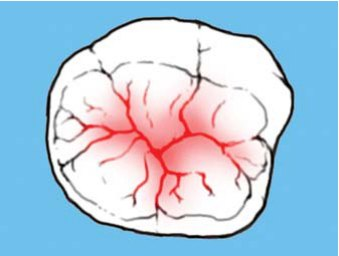
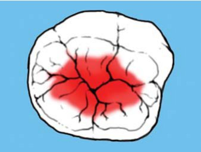
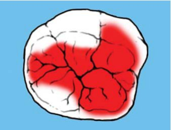
Методика відновлення зубів 1-го рівня зруйнованості
Типовим представником 1-го рівня є карієс фісур, що зустрічається досить часто. Ця локалізація дуже непередбачувана, і нерідко ураження виявляється набагато більшим, ніж передбачувана глибина. Фісурна форма карієсу, як правило, характеризується практично повним збереженням жувальної морфології, і якою б високою не була майстерність реставратора, ми все одно не зуміємо відтворити жувальну поверхню краще, ніж вона була. Тому цілком резонно було б скопіювати збережену анатомію і перенести її в майбутню реставрацію. Реалізувати це можна за допомогою методики оклюзійного ключа.
Основною відмінністю цього підходу від традиційного варіанту відновлення є те, що перед препаруванням з жувальної поверхні знімається ключ (невеликий відтиск), яким згодом можна було б відтиснути порцію композиту для надання їй початкової форми зуба. Найбільш відповідний матеріал для виготовлення ключа — жорсткі прикусні силікони. Вони мають достатню твердість, щоб відтиснути найдрібніші деталі жувальної поверхні, і при цьому практично не липнуть до композиту.
Клінічний приклад
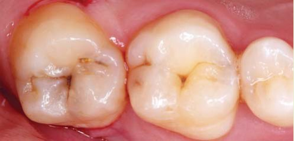
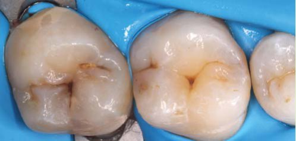
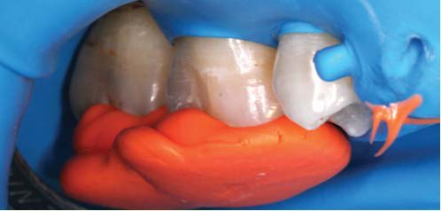
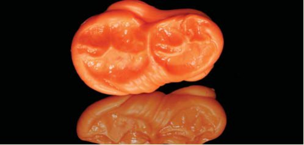
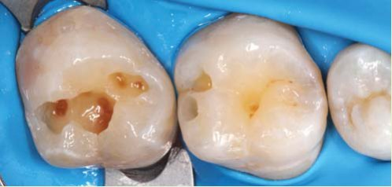
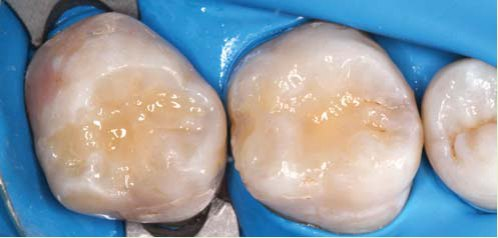
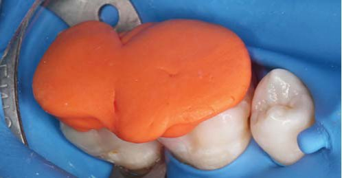
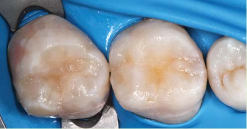
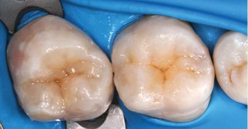
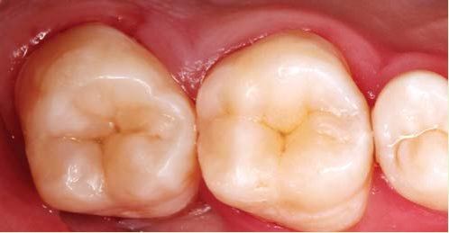
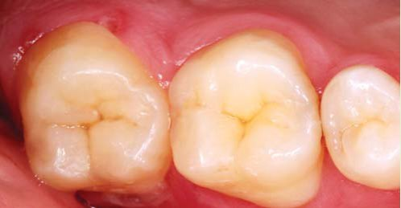
Слід врахувати, що важливою умовою успішного виконання реставрації за методикою оклюзійного силіконового ключа є використання композитних матеріалів, що мають досить щільну консистенцію і здатні утримати передану силіконовим ключем форму. У цьому плані дуже вдалим варіантом є композит Естет-Ікс ЕйчДі, який, окрім прекрасних хроматичних і механічних характеристик, має також і необхідний ступінь щільності, чудово утримуючи будь-яку форму.
Методика відновлення зубів 2-го рівня зруйнованості
Серед клінічних випадків цієї категорії найчастіше зустрічаються глибокі каріозні порожнини і непридатні пломби. Головною особливістю другого рівня є те, що при досить значній зруйнованості — до 50% жувальної поверхні — усе ще зберігаються основні обриси горбиків, гребенів, частини валиків і т. д. Маючи в розпорядженні подібні орієнтири, ми можемо легко продовжити зовнішні контури збережених оклюзійних елементів і отримати жувальну поверхню, дуже близьку до оригіналу.
Для цього використовується традиційна методика пошарової реставрації, без будь-яких змін. Єдиним доповненням для зручності реставрації є застосування моделювальних інструментів у певній послідовності.
Алгоритм відновлення жувальної поверхні. Концепція трьох інструментів
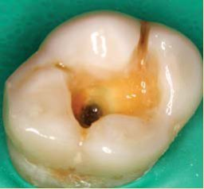
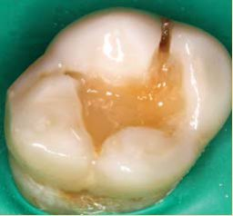
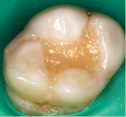
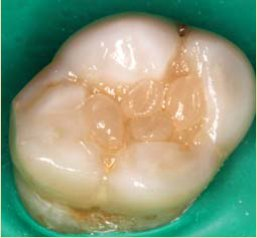
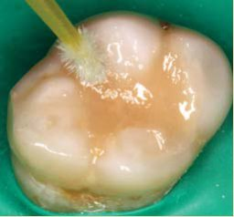
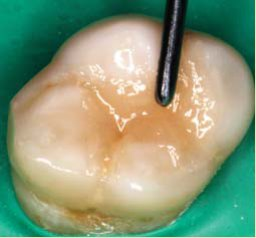
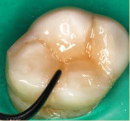
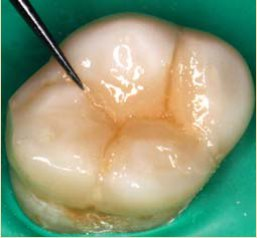
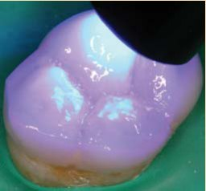
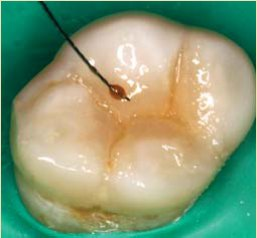
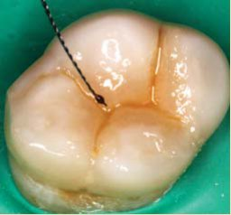
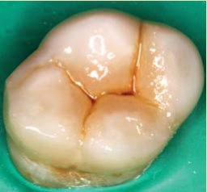
Клінічний приклад відновлення дефекту 2-го рівня зруйнованості, що демонструє ефективність моделювання, проведеного в концепції трьох інструментів
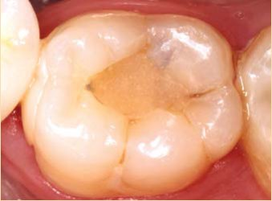
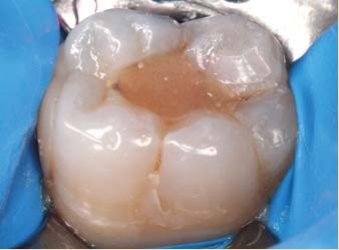
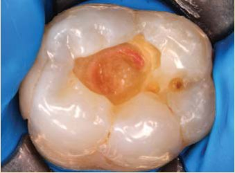
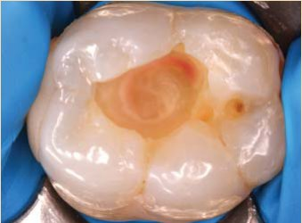
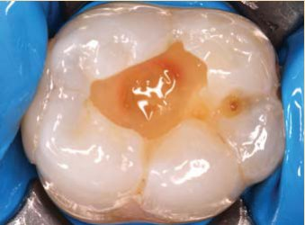
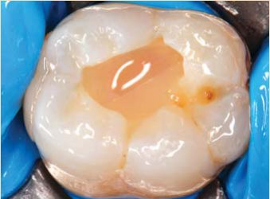
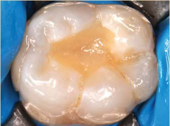
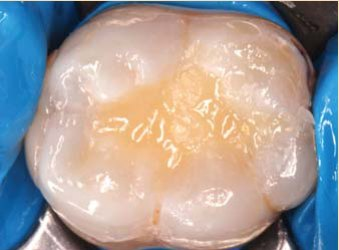
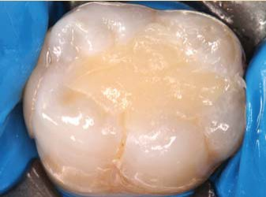
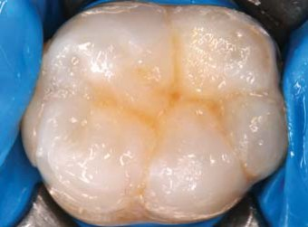
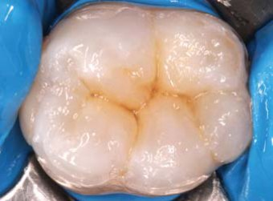
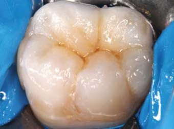
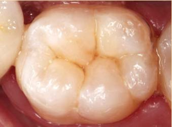
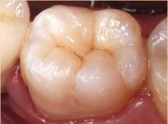
Слід, однак, пам'ятати, що для успішного виконання реставрації у традиційній методиці лікар, безумовно, має володіти певним досвідом і розвиненими навичками анатомічного моделювання. Найефективніший спосіб навчитися точному відтворенню жувальної поверхні — постійні практичні тренування. Треба малювати зуби, ліпити їх з пластиліну, вирізати з гіпсу, моделювати з воску, відтворювати в роті композитом і т.д. Усе це слід робити, керуючись загальними принципами формоутворення і знаннями топографії анатомічних елементів. Поступово розвинеться почуття форми, уміння «читати» характерні анатомічні деталі, виявляться деякі залежності, і врешті-решт прийде цілісне розуміння усього процесу реконструкції жувальної поверхні.
Методика відновлення зубів 3-го класу зруйнованості
До цієї категорії дефектів належать масштабні каріозні ураження, об'ємні старі пломби, неускладнені відколи горбків, стінок і будь-які інші патології, що характеризуються великим дефіцитом твердих тканин. Такі зуби на межі показань до прямих методів відновлення, і в тих випадках, коли руйнування коронки сягає рівня понад 40% за обсягом, показані вже непрямі реставраційні конструкції за типом композитних або керамічних вкладок, оверлеїв або коронок. Найбільша проблема при відтворенні жувальної морфології у клінічних випадках цієї категорії — відсутність достатньої кількості орієнтирів. У таких умовах ми не можемо спрогнозувати необхідну форму і визначити правильне просторове розміщення кожного анатомічного елемента.
У зуботехнічній лабораторії подібні проблеми вирішуються за допомогою попереднього воскового моделювання зубів у правильно налаштованому артикуляторі.
В основу даної методики покладено точно такий самий принцип: перед тим як почати відновлення зуба, робиться попереднє моделювання композитом у роті прямо поверх старих пломб і патологічно змінених ділянок. Лікар відтворює морфологію зуба так, як вважає за потрібне, і потім перевіряє оклюзійні співвідношення, видаляючи надлишки бором. Відтак усі основні корекції провадяться на початку роботи на попередній композитної моделі, а не на виконаній реставрації.
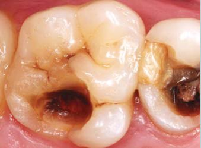
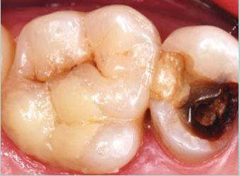
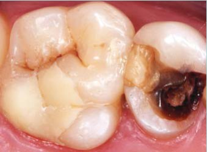
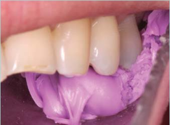
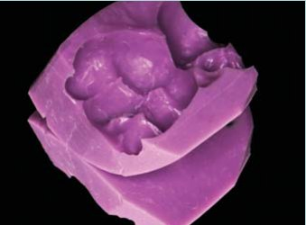
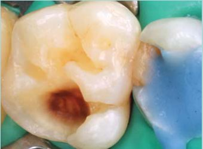
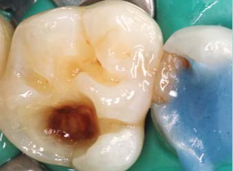
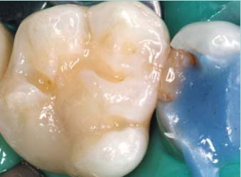
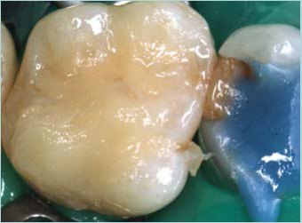
Такі методичні підходи дозволяють отримувати максимально точні результати реставраційного лікування навіть при відновленні зубів зі значним ступенем зруйнованості.
Література
- Г. Шиллингбург, Э. Уилсон, Д. Моррисон. Восковое моделирование окклюзионных поверхностей. Перевод Е. Ханина. –М: Издательский дом «АЗБУКА», 2004.
- Г. Зойберт. Принципы анатомического воскового моделирования по Шульцу. Перевод Б. Яблоновский. –М: Издательский дом «АЗБУКА», 2007.
- Э. Штегер. Анатомическая форма жевательной поверхности зуба. Атлас и практическое руководство. Перевод М. А. Полещук. –М: Квинтэссенция, 1996.
- Л. М. Ломиашвили, Л. Г. Аюпова. Художественное моделирование и реставрация зубов. –М: Медицинская книга, 2004.
- В. А. Хватова. Клиническая гнатология. –М: Медицина, 2005.